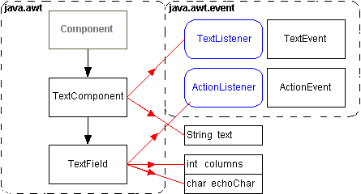

A TextField,
generates an ActionEvent, only
when the ENTER key is hit, while the cursor is focused upon
it.
When in editable mode, you can click in the text field, and
'enter' the details required. Here are some of the more useful
methods of TextField:
int getColumns();
void setEchoChar(char c);
Note: The Java version
1.0 versions of the AWT, do not support keyboard tabbing between
components! The Java 1.1 'Swing' components fix this failing. |
A TextField
is a single line text entry box, that usually requires some
label in front of it to explain what the user needs to enter
there.
It inherits several methods from the TextComponent,
class which deal with inserting, selecting and editing text. |